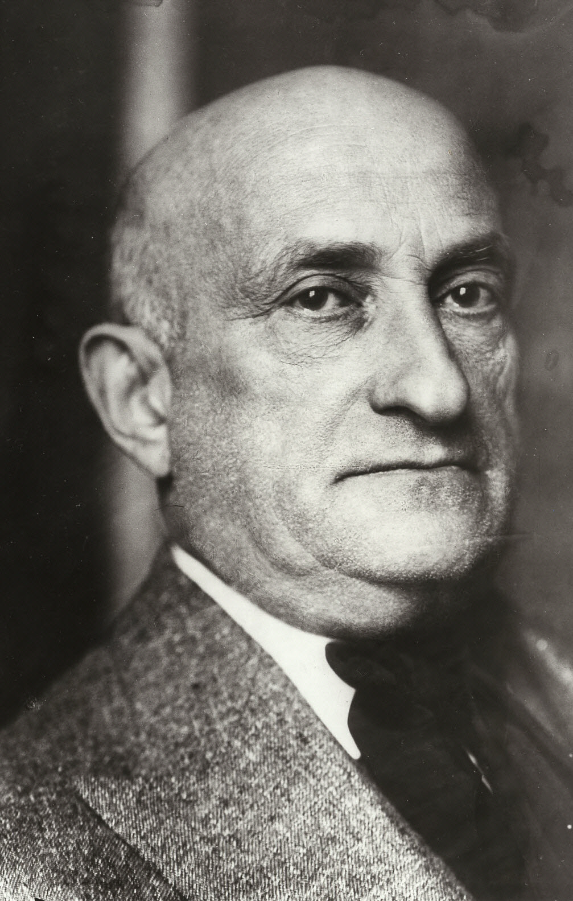

Le Square Victor Basch
Victor Basch, philosophe et homme politique, président de la Ligue des droits de l'homme, s’engage contre l’extrême droite dès les années 1920-1930. En 1940, il fuit en zone libre avec sa femme. Victor Basch est recherché par Vichy et le 10 janvier 1944, il est arrêté avec sa femme par Touvier en personne et le couple meurt fusillé le soir même par des miliciens.
